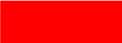

<ion-content [fullscreen]="true">
  <ion-header collapse="condense">
    <ion-toolbar>
      <ion-title size="large">Mapa</ion-title>
    </ion-toolbar>
  </ion-header>

  <div class="map-container">
    <div class="map-frame">
      <div id="mapIdhum" style="width: 100%; height: 100%"></div>
      <ion-fab bottom id="menuButtons" class="menu-buttons">
        <ion-list>
          <ion-item lines="none">
             
            <ion-label>    Superior al Umbral</ion-label>
          </ion-item>
        
          <ion-item lines="none">
             
            <ion-label>    Dentro de los Umbrales</ion-label>
          </ion-item>
        
          <ion-item lines="none">
             
            <ion-label>    Inferior al Umbral</ion-label>
          </ion-item>
        </ion-list>
        <br>
        <br>
        <br>
      </ion-fab>
    </div>
  </div>

</ion-content>
